3. Under-sampling¶
You can refer to Comparison of the different under-sampling algorithms.
3.1. Prototype generation¶
Given an original data set 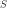, prototype generation algorithms will generate a new set 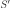 where 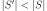 and 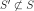. In other words, prototype generation technique will reduce the number of samples in the targeted classes but the remaining samples are generated — and not selected — from the original set.
ClusterCentroids makes use of K-means to reduce the number of
samples. Therefore, each class will be synthesized with the centroids of the
K-means method instead of the original samples:
>>> from collections import Counter
>>> from sklearn.datasets import make_classification
>>> X, y = make_classification(n_samples=5000, n_features=2, n_informative=2,
... n_redundant=0, n_repeated=0, n_classes=3,
... n_clusters_per_class=1,
... weights=[0.01, 0.05, 0.94],
... class_sep=0.8, random_state=0)
>>> print(sorted(Counter(y).items()))
[(0, 64), (1, 262), (2, 4674)]
>>> from imblearn.under_sampling import ClusterCentroids
>>> cc = ClusterCentroids(random_state=0)
>>> X_resampled, y_resampled = cc.fit_resample(X, y)
>>> print(sorted(Counter(y_resampled).items()))
[(0, 64), (1, 64), (2, 64)]
The figure below illustrates such under-sampling.

ClusterCentroids offers an efficient way to represent the data cluster
with a reduced number of samples. Keep in mind that this method requires that
your data are grouped into clusters. In addition, the number of centroids
should be set such that the under-sampled clusters are representative of the
original one.
Warning
ClusterCentroids supports sparse matrices. However, the new samples
generated are not specifically sparse. Therefore, even if the resulting
matrix will be sparse, the algorithm will be inefficient in this regard.
3.2. Prototype selection¶
On the contrary to prototype generation algorithms, prototype selection algorithms will select samples from the original set . Therefore, is defined such as and 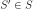.
In addition, these algorithms can be divided into two groups: (i) the controlled under-sampling techniques and (ii) the cleaning under-sampling techniques. The first group of methods allows for an under-sampling strategy in which the number of samples in is specified by the user. By contrast, cleaning under-sampling techniques do not allow this specification and are meant for cleaning the feature space.
3.2.1. Controlled under-sampling techniques¶
RandomUnderSampler is a fast and easy way to balance the data by
randomly selecting a subset of data for the targeted classes:
>>> from imblearn.under_sampling import RandomUnderSampler
>>> rus = RandomUnderSampler(random_state=0)
>>> X_resampled, y_resampled = rus.fit_resample(X, y)
>>> print(sorted(Counter(y_resampled).items()))
[(0, 64), (1, 64), (2, 64)]

RandomUnderSampler allows to bootstrap the data by setting
replacement to True. The resampling with multiple classes is performed
by considering independently each targeted class:
>>> import numpy as np
>>> print(np.vstack([tuple(row) for row in X_resampled]).shape)
(192, 2)
>>> rus = RandomUnderSampler(random_state=0, replacement=True)
>>> X_resampled, y_resampled = rus.fit_resample(X, y)
>>> print(np.vstack(np.unique([tuple(row) for row in X_resampled], axis=0)).shape)
(181, 2)
In addition, RandomUnderSampler allows to sample heterogeneous data
(e.g. containing some strings):
>>> X_hetero = np.array([['xxx', 1, 1.0], ['yyy', 2, 2.0], ['zzz', 3, 3.0]],
... dtype=np.object)
>>> y_hetero = np.array([0, 0, 1])
>>> X_resampled, y_resampled = rus.fit_resample(X_hetero, y_hetero)
>>> print(X_resampled)
[['xxx' 1 1.0]
['zzz' 3 3.0]]
>>> print(y_resampled)
[0 1]
It would also work with pandas dataframe:
>>> from sklearn.datasets import fetch_openml
>>> df_adult, y_adult = fetch_openml(
... 'adult', version=2, as_frame=True, return_X_y=True)
>>> df_adult.head()
>>> df_resampled, y_resampled = rus.fit_resample(df_adult, y_adult)
>>> df_resampled.head()
NearMiss adds some heuristic rules to select samples
[mani2003knn]. NearMiss implements 3 different types of
heuristic which can be selected with the parameter version:
>>> from imblearn.under_sampling import NearMiss
>>> nm1 = NearMiss(version=1)
>>> X_resampled_nm1, y_resampled = nm1.fit_resample(X, y)
>>> print(sorted(Counter(y_resampled).items()))
[(0, 64), (1, 64), (2, 64)]
As later stated in the next section, NearMiss heuristic rules are
based on nearest neighbors algorithm. Therefore, the parameters n_neighbors
and n_neighbors_ver3 accept classifier derived from KNeighborsMixin
from scikit-learn. The former parameter is used to compute the average distance
to the neighbors while the latter is used for the pre-selection of the samples
of interest.
3.2.1.1. Mathematical formulation¶
Let positive samples be the samples belonging to the targeted class to be under-sampled. Negative sample refers to the samples from the minority class (i.e., the most under-represented class).
NearMiss-1 selects the positive samples for which the average distance
to the  closest samples of the negative class is the smallest.
closest samples of the negative class is the smallest.

NearMiss-2 selects the positive samples for which the average distance to the
farthest samples of the negative class is the smallest.

NearMiss-3 is a 2-steps algorithm. First, for each negative sample, their
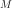 nearest-neighbors will be kept. Then, the positive samples selected
are the one for which the average distance to the nearest-neighbors
is the largest.

In the next example, the different NearMiss variant are applied on the
previous toy example. It can be seen that the decision functions obtained in
each case are different.
When under-sampling a specific class, NearMiss-1 can be altered by the presence of noise. In fact, it will implied that samples of the targeted class will be selected around these samples as it is the case in the illustration below for the yellow class. However, in the normal case, samples next to the boundaries will be selected. NearMiss-2 will not have this effect since it does not focus on the nearest samples but rather on the farthest samples. We can imagine that the presence of noise can also altered the sampling mainly in the presence of marginal outliers. NearMiss-3 is probably the version which will be less affected by noise due to the first step sample selection.

3.2.2. Cleaning under-sampling techniques¶
Cleaning under-sampling techniques do not allow to specify the number of samples to have in each class. In fact, each algorithm implement an heuristic which will clean the dataset.
3.2.2.1. Tomek’s links¶
TomekLinks detects the so-called Tomek’s links [tomek1976two]. A
Tomek’s link between two samples of different class 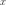 and 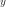 is
defined such that for any sample 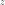:
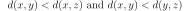
where 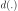 is the distance between the two samples. In some other words, a Tomek’s link exist if the two samples are the nearest neighbors of each other. In the figure below, a Tomek’s link is illustrated by highlighting the samples of interest in green.

The parameter sampling_strategy control which sample of the link will be
removed. For instance, the default (i.e., sampling_strategy='auto') will
remove the sample from the majority class. Both samples from the majority and
minority class can be removed by setting sampling_strategy to 'all'. The
figure illustrates this behaviour.

3.2.2.2. Edited data set using nearest neighbours¶
EditedNearestNeighbours applies a nearest-neighbors algorithm and
“edit” the dataset by removing samples which do not agree “enough” with their
neighboorhood [wilson1972asymptotic]. For each sample in the class to be
under-sampled, the nearest-neighbours are computed and if the selection
criterion is not fulfilled, the sample is removed. Two selection criteria are
currently available: (i) the majority (i.e., kind_sel='mode') or (ii) all
(i.e., kind_sel='all') the nearest-neighbors have to belong to the same
class than the sample inspected to keep it in the dataset:
>>> sorted(Counter(y).items())
[(0, 64), (1, 262), (2, 4674)]
>>> from imblearn.under_sampling import EditedNearestNeighbours
>>> enn = EditedNearestNeighbours()
>>> X_resampled, y_resampled = enn.fit_resample(X, y)
>>> print(sorted(Counter(y_resampled).items()))
[(0, 64), (1, 213), (2, 4568)]
The parameter n_neighbors allows to give a classifier subclassed from
KNeighborsMixin from scikit-learn to find the nearest neighbors and make
the decision to keep a given sample or not.
RepeatedEditedNearestNeighbours extends
EditedNearestNeighbours by repeating the algorithm multiple times
[tomek1976experiment]. Generally, repeating the algorithm will delete
more data:
>>> from imblearn.under_sampling import RepeatedEditedNearestNeighbours
>>> renn = RepeatedEditedNearestNeighbours()
>>> X_resampled, y_resampled = renn.fit_resample(X, y)
>>> print(sorted(Counter(y_resampled).items()))
[(0, 64), (1, 208), (2, 4551)]
AllKNN differs from the previous
RepeatedEditedNearestNeighbours since the number of neighbors of the
internal nearest neighbors algorithm is increased at each iteration
[tomek1976experiment]:
>>> from imblearn.under_sampling import AllKNN
>>> allknn = AllKNN()
>>> X_resampled, y_resampled = allknn.fit_resample(X, y)
>>> print(sorted(Counter(y_resampled).items()))
[(0, 64), (1, 220), (2, 4601)]
In the example below, it can be seen that the three algorithms have similar impact by cleaning noisy samples next to the boundaries of the classes.

3.2.2.3. Condensed nearest neighbors and derived algorithms¶
CondensedNearestNeighbour uses a 1 nearest neighbor rule to
iteratively decide if a sample should be removed or not
[hart1968condensed]. The algorithm is running as followed:
Get all minority samples in a set 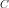.
Add a sample from the targeted class (class to be under-sampled) in and all other samples of this class in a set .
Go through the set , sample by sample, and classify each sample using a 1 nearest neighbor rule.
If the sample is misclassified, add it to , otherwise do nothing.
Reiterate on until there is no samples to be added.
The CondensedNearestNeighbour can be used in the following manner:
>>> from imblearn.under_sampling import CondensedNearestNeighbour
>>> cnn = CondensedNearestNeighbour(random_state=0)
>>> X_resampled, y_resampled = cnn.fit_resample(X, y)
>>> print(sorted(Counter(y_resampled).items()))
[(0, 64), (1, 24), (2, 115)]
However as illustrated in the figure below, CondensedNearestNeighbour
is sensitive to noise and will add noisy samples.
In the contrary, OneSidedSelection will use TomekLinks to
remove noisy samples [hart1968condensed]. In addition, the 1 nearest
neighbor rule is applied to all samples and the one which are misclassified
will be added to the set . No iteration on the set will take
place. The class can be used as:
>>> from imblearn.under_sampling import OneSidedSelection
>>> oss = OneSidedSelection(random_state=0)
>>> X_resampled, y_resampled = oss.fit_resample(X, y)
>>> print(sorted(Counter(y_resampled).items()))
[(0, 64), (1, 174), (2, 4404)]
Our implementation offer to set the number of seeds to put in the set
originally by setting the parameter n_seeds_S.
NeighbourhoodCleaningRule will focus on cleaning the data than
condensing them [laurikkala2001improving]. Therefore, it will used the
union of samples to be rejected between the EditedNearestNeighbours
and the output a 3 nearest neighbors classifier. The class can be used as:
>>> from imblearn.under_sampling import NeighbourhoodCleaningRule
>>> ncr = NeighbourhoodCleaningRule()
>>> X_resampled, y_resampled = ncr.fit_resample(X, y)
>>> print(sorted(Counter(y_resampled).items()))
[(0, 64), (1, 234), (2, 4666)]

3.2.2.4. Instance hardness threshold¶
InstanceHardnessThreshold is a specific algorithm in which a
classifier is trained on the data and the samples with lower probabilities are
removed [smith2014instance]. The class can be used as:
>>> from sklearn.linear_model import LogisticRegression
>>> from imblearn.under_sampling import InstanceHardnessThreshold
>>> iht = InstanceHardnessThreshold(random_state=0,
... estimator=LogisticRegression(
... solver='lbfgs', multi_class='auto'))
>>> X_resampled, y_resampled = iht.fit_resample(X, y)
>>> print(sorted(Counter(y_resampled).items()))
[(0, 64), (1, 64), (2, 64)]
This class has 2 important parameters. estimator will accept any
scikit-learn classifier which has a method predict_proba. The classifier
training is performed using a cross-validation and the parameter cv can set
the number of folds to use.
Note
InstanceHardnessThreshold could almost be considered as a
controlled under-sampling method. However, due to the probability outputs, it
is not always possible to get a specific number of samples.
The figure below gives another examples on some toy data.